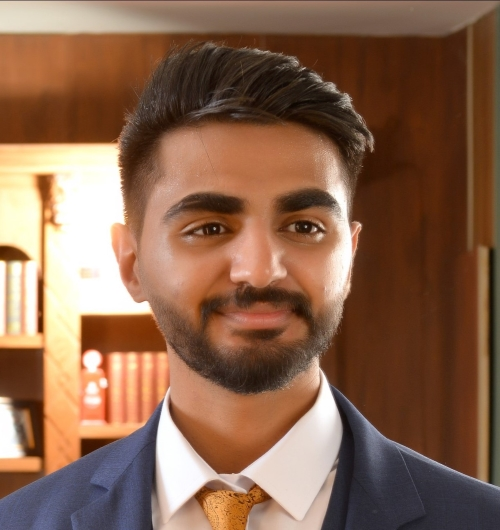

Ahmad Asad Al-Qareuty
Computer Enginner

EDUCATION:
HASHEMITE UNIVERSITY
Bachelor of Computer Engineering
2020-2024.
CERTIFICATES
- Full Stack web development Course on Udemy
- 2D design & photoshop training Certificate
- JOSDC Verilog Training Completion
- ORACLE database training
SKILLS:
- Hardware Design
- Software Development
- Full-Stack Development
- Networking and Security
- Critical Thinking
- Project Management
- Content Development
- Team player
INTRESTS:
- Full-Stack Development
- Machine Learning and AI Integration in
Hardware
- Algorithms
- Networking and Cybersecurity
- Embedded Systems and Robotics
- Digital Logic Design
LANGUAGES:
- English: Fluent
- Arabic : Native
WORK EXPERIENCE:
GRADUATION PROJECT
Swift and Lightweight Face-ID User Authentication Scheme
- Developed a resource-efficient face ID authentication system for
real-time recognition.
- Targeted high-security applications such as online exams and patient
identification.
- Focused on creating a lightweight system suitable for devices with
limited computational resources.
- Developed and managed databases using SQLite and JSON
JOSDC TRAINING PROGRAM
Jordan National Semiconductors Design Competition
- Competed in designing a general-purpose processor using Verilog.
- My team reached the finals, demonstrating advanced understanding
and application of digital design principles.
IMAGINARY NUMBERS MATRIX MULTIPLIER
Verilog Project
- Designed and implemented a matrix multiplier for imaginary numbers
using Verilog.
- Demonstrated proficiency in handling complex arithmetic operations
in hardware design.
TECHNICAL INTERNSHIPS AND WORKSHOPS
- I attended workshops and trainings that improved my social skills
and teamwork.
- Gained insights into university network configurations and security
systems.
PROFESSIONAL SUMMARY:
With a great foundation in both hardware and software, I have
successfully completed numerous projects showing my capability in
digital design, coding, team work and system integration.
My experience
ranges from understanding and implementing complex hardware
designs using Verilog to develop different hardware designs, as well as
creating full-stack applications with a focus on efficiency and security in
software.
My interest in microprocessor design and continuous learning
motivates me to strive in innovative areas.